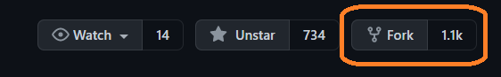

Frontend Development With HTML, CSS, JS, Bootstrap
Step 1
Fork the repo from here
Step 2
Clone the repo, by pasting the below command in your git bash.
git clone https://github.com/girlscript/winter-of-contributing.git
Step 3
Create your branch
Move to your cloned directory using this command cd winter-of-contributing
Now, you can create your own branch, using the below command.
git branch -b "branch name here"
Step 4
Switch to the branch you've created.
To switch from main to the branch you've created, use the below command.
git checkout "your branch name here"
Step 5
Start your contribution.

It is advised to use relevant subdirectories for your content.
Your subdirectory name should be meaningful.
Attribute where you've taken ideas, images and inspiration from.
Step 6
Commit your changes.
1. Check your changes using git status command.
2. Add your changes to staging area using git add .
Note: Dot (.) in the above command represents all
3. Commit your staged changes using git commit -m "Commit message here"
Note: A commit message should be meaningful too.
Step 7
Push your changes

To push your local changes to the remote repository, use the below command
git push -u origin "your branch name here"
Step 8
Create a PR
Check your fork, for Compare & Pull Request button, which looks like below.

Click on it
Give a appropriate title with issue number and respective domain.
Strictly follow PR template.
Give a brief explanation about your contribution.
Click on Create Pull Request button
Step 9
Wait for reviews, and to get your PR merged.

After creating a PR, reviewers will, review your changes, and suggest you to change something, if need arise.
Please be patient, and wait for approvals.
If all goes well, your PR will get merged.